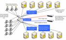
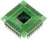

This page contains recommendations for your hardware configurations to achieve optimal performance in using the Oracle TimesTen product.
 |
|
||||||||||||
|  | |||||||||||||
Separate transaction logs and checkpoint files on different disk drives
For write intensive applications, put your transaction logs and checkpoint files on separate disks to reduce I/O contention. This is particularly important if you need to have consistent response times and throughput for your application requests. If your checkpoint files are on the same disk spindle, the checkpoint operation competes with the transaction logging activities going to the same disk.
Disk speed matters - use faster disks for write intensive applications
Faster disks play a role in your application update throughput. Keep in mind that log records are generated as a result of your application executing INSERT, UPDATE and DELETE operations. Log records are also generated if you are caching read-only data from the Oracle Database with AutoRefresh. When the Cache Connect agent refreshes the TimesTen database with updates from the Oracle Database, the refresh operations generate log records as the updates are applied to the TimesTen cache tables. Faster disks allow the TimesTen log manager to complete the write to disk faster, thus reducing the possibility that the application is waiting for the log buffer to be available. You can monitor LOG_BUFFER_WAIT in the system MONITOR table for I/O contention.
Faster processor improves transaction response time and throughput
With an in-memory database, the TimesTen data manager makes optimal use of processor power - the faster the processor speed is, the faster the TimesTen database runs. This is particularly true when the application runs in direct-linked connection mode, since there are no application wait-time for network round trips, no overhead for inter-process communication and process dispatches, and there is no disk I/O wait time. Faster processors yield lower response time and consequently the application would achieve higher throughput.
If the application uses the client/server connection mode, the faster processors will still be helpful for the database operations even though the network round trips would typically account for a major part of the response time.
High network bandwidth and low network latency for consistent replication performance
When using Replication, network bandwidth and latency are important factors for consistent replication performance between the systems where the TimesTen database is replicated.
TimesTen Replication supports both LAN and WAN configurations; however, reliable and consistent network performance is critical for Replication to keep up on data transmission between the replicated systems.